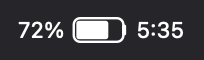
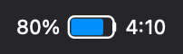
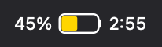

A tiny standalone macOS menu-bar app ("Battery Time.app", built on StatusItemKit) that restores the estimated battery time remaining to the menu bar — Apple removed the always-visible estimate in Sierra (2016) — with instant plug/unplug updates and a details dropdown.
The app is the primary deliverable (see "Standalone Swift app" below). The
original menu-bar plugin it replaced is still in the repo (battery-time.5s.sh,
wired by ./install.sh) but is retired and undocumented here.
What it shows
Menu bar — a native-style battery glyph (fill proportional to charge) with
the percentage to its left and the time remaining to its right, drawn as
one tight image by the compiled render-title helper (auto-adapts to light/dark),
so it spaces like the native icons. The battery has a little face by default
(Battery face in the dropdown turns it off): it smiles, frowns when the
battery is low, and steps aside for the bolt while charging. State is shown by
the fill colour and a bolt:
| State | Menu bar |
|---|---|
| On battery |  |
| Low (≤20%) |  |
| Charging |  |
| High Power mode |  |
| Low Power mode |  |
(Examples rendered by the same render-title helper the menu bar uses.)
- Charging — the glyph is bisected by a bolt cutout (and shows time-to-full).
- High Power mode — the glyph fill turns blue (including while charging).
- Low Power mode — the glyph fill turns yellow (like the native icon).
- On battery the fill turns red at ≤20%; time is to-empty.
- Independent icon / percentage / time toggles ("Menu bar shows…" in the dropdown).
- Right after unplug macOS takes ~30–60s to compute its estimate; until then the
plugin shows its own (measured discharge, or a nominal ~12 W when idle) so a
time appears immediately instead of
--:--. Our stop-gap is capped at the nominal (so a near-zero idle draw can't project an unrealistic 20h+); once macOS has its own estimate it's shown as-is. Whole hours render compactly as8h. - Falls back to "
pct% [bolt] time" text ifrender-titleisn't compiled. Always renders something, so it keeps its position under menu-bar managers like Barn.
Dropdown (click the item):
- A native-style Energy Mode section at the top — Automatic / Low Power /
High Power, the active one checkmarked; selecting one sets
pmset powermode - Battery percentage
- A detailed status line —
3 hr 14 min until empty,Charging - 1 hr 20 min until full,Fully charged, … - Extra stats (one
ioregcall): health + cycle count, live power draw (V×A), adapter wattage, and temperature (with a °C/°F toggle) / voltage / raw charge (mAh) - 24-hour usage — time on battery vs plugged in, parsed from
pmset -g log(which is slow, so it's recomputed in the background and cached ~10 min — the scrape never blocks a refresh) - Battery-longevity tips — a "Battery Life Tips" item (shown only when a trigger fires: deep discharges, prolonged high charge, running warm, or cycle count near rated life) that opens a dialog with the advice (keeps the dropdown narrow)
- Menu bar shows… — toggle the battery icon / percentage / time independently
- Open Battery Settings... — opens the Battery pane in System Settings